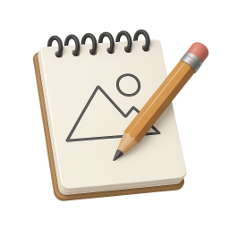
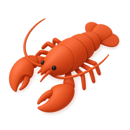

I'm Saber Zou, a Design Team Lead at Microsoft. By day, I lead 70+ designers shaping AI products used by billions. By night, I build experimental tools exploring what design + AI can create when nobody's watching. Based in Beijing, working at the intersection of design leadership and emerging technology — both at massive scale and intimate scale.
Special thanks to my awesome OpenClaw

agents
Atticus and
Axel — none of this would exist without them.